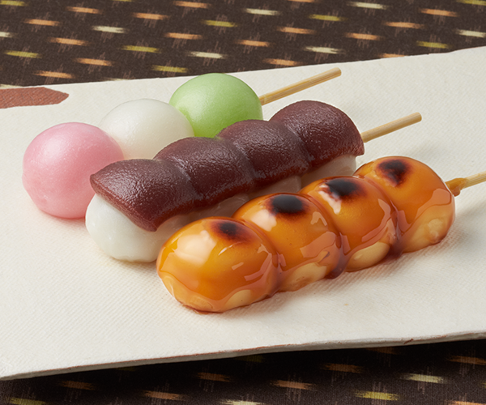

日式糰子

介紹
糰子（だんご），又稱糰子串、烤糰子，是和菓子的一種。是藉由搓半濕的糯米粉製成，日式糰子完全沒有餡料，用開水煮熟撈出，食用時會裹上豆粉、黑芝麻、白糖或花生粉等，在日各地都有其特色糰子。
日式糰子的製法介於元宵和湯圓之間，在加入日本的民族特色之後，便形成了今日的糰子。
作法
將米磨成粉末（一般使用糯米）後，加上開水揉捏成小團狀蒸熟即成，類似年糕。通常是三到五個串在長竹籤上。可以根據地方產物或特性的不同使用麵粉或黍子等的穀物粉作材料。
樣式
- あんこ（anko）団子：紅豆是日本最常見的甜點材料，自然在糰子中也少不了紅豆口味的糰子了。不過紅豆糰子有兩種，一種是包在白玉裡面的紅豆蓉，另一種則是淋在糰子上面成為醬料。
- みたらし（mitarashi）団子：以醬油，糖，澱粉和水，煮成鹹甜的佐料，淋在糰子上。稱為「みたらし」。有趣的是「みたらし」漢字寫作「御手洗」，但這個「御手洗」跟廁所的「御手洗」（otearai）讀音是不一樣的哦！
- 三色（sanshoku）団子：一串中有粉紅色、綠色及白色，有些會使用食物天然顏色，但大部份都是使用食用色素，所以吃起來並不會有特別的味道。因為常常會在賞櫻時吃，所以又名「花見団子」（hanami dango）。
- ずんだ（zunda）:「ずんだ」這個字代表枝豆末，把枝豆（毛豆）煮好，取出豆子後加入砂糖搗成末，就可以沾在糰子上變成ずんだ了。
種類
- 花見糰子：以櫻花花瓣與艾草等植物改變糰子顏色，通常為紅綠白三色組合。於花見（觀賞櫻花）的時候吃。
- 月見糰子：農曆八月十五中秋節（十五夜）賞月的時候吃。
- 蓬糰子：磨碎的的糰子，加上黃豆麵和糖一起吃。
- 白玉糰子：糯米粉製作的糰子。
- 吉備糰子（黍子麵糰子）：以黍子為材料，傳說是桃太郎的祖母製作的。
- 馬鈴薯團子：使用馬鈴薯與太白粉製成的一種點心，通常會用火爐來烤，在北海道一帶較盛行。